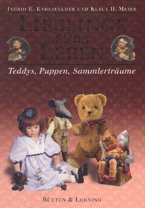

|
Lieblinge fürs Leben
Teddys, Puppen, Sammlerträume
von Ingrid E. Endesfelder und Klaus H. Meier
304 Seiten, gebunden mit Schutzumschlag
44 Farbabb. und 130 s/w. Abb.
Verlag Rütten & Loening, Berlin 1996
49,90 DM ISBN 3-352-00607-5
|
 |
| Mit ihrem
1996 erschienenen umfangreichen Lese- und Bilderbuch
Lieblinge fürs Leben erweisen sich die Autoren als
Kenner und Chronisten der Szene, die sich um modernes
Spielzeug und liebenswerte Sammlerobjekte rankt. Über
zwanzig Stars im Puppen- und Teddydesign geben sehr
persönliche Auskünfte über ihre Wege und Motive, sich
diesem sympathischen und kreativen Metier verschrieben zu
haben. Entstanden ist ein attraktiver Führer in die Hochburgen von klassischen und modernen Puppen, liebenswerten Teddys, kostbaren Sammlerfiguren und wertvollem nostalgischem Spielzeug. Begehrt und beliebt wie einst sind Geschöpfe aus dem Hause Schildkröt, das seit 100 Jahren Zelluloidpuppen fertigt. Die Käthe Kruse GmbH in Donauwörth führt das Erbe der legendären deutschen Puppenkünstlerin Käthe Kruse fort. Ein Exklusivbericht zum 125. Jubiläum der W. Goebel-Porzellanfabrik hält Episoden der weltweiten Erfolgsgeschichte der Hummelfiguren bereit. Die Autoren waren auch auf den Spuren des einstigen und heutigen Spielzeuglandes Thüringen. Impressionen aus der Welt-Spielwarenstadt Sonneberg und anderen Orten der an der thüringisch-oberfränkischen Spielzeugstraße machen das Buch auch zu einem interessanten Reisebegleiter in Sachen Qualitätsspielzeug. Ein besonderer Tip für Berliner und Berlinbesucher ist die Vorstellung anspruchsvoller Spielzeuggeschäfte und Puppengalerien. Ein Blick geht auch über die Grenzen nach den Niederlanden, nach Österreich und in die Schweiz zu Puppen- und Bärenfestivals sowie Museen und Künstlern. Suchen Sie einen Querschnitt durch die aktuelle Welt anspruchsvollen Spielzeugs? In Lieblinge fürs Leben werden sie auf Ihre Kosten kommen. |
|